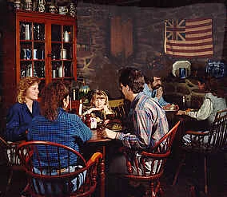
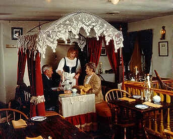
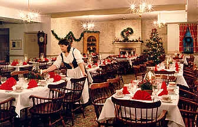

Two ways to dine
A walk-in tavern for lunch and dinner every day, and candlelit dining rooms in the colonial manner each evening.
Springhouse Tavern every day, 11 a.m. to 9 p.m. No reservations.
Alexander Dobbin Dining Rooms Mon–Fri 5 to 9 p.m., Sat & Sun 4 to 9 p.m. Reserve about a week ahead.
The Springhouse Tavern
For casual dining: a wide selection of dinners, sandwiches, salads and popular cocktails, served from 11 a.m. to 9 p.m. every day.
The tavern takes no reservations. Seating is first come, first served, and like most area restaurants it sees waits at lunch and dinner, so arrive early.
The Alexander Dobbin Dining Rooms
Where candlelit elegance, superior food in abundance and gracious service bring back the sights, sounds and tastes of two centuries ago.
Colonial and Continental cuisine, prepared from the finest and freshest ingredients, with homemade breads and desserts from the house’s own bakery. There is a children’s menu.
- Rooms: the Dining Room, Library, Parlor, Study, Spinning Room, and the Bedroom, where one can actually dine in bed.
- Reservations: advised, about a week ahead, at (717) 334-2100. Walk-ins welcome.



Banquets and meetings
The house’s country charm suits banquets, meetings and special occasions for up to 130 guests, with Adams County style entrees, fresh vegetables, a salad bar and homemade desserts.
A free Banquet Planning Kit is available. Email for the kit or call (717) 334-2100.
Why book a week ahead
With more visitors and fewer staff, the house limits how many guests it serves each day to keep the service its guests expect after 48 years. Dining room reservations fill quickly, and same-day calls often can’t be seated. Calling ahead is the best way to get a table.
The full menus are kept on the current dobbinhouse.com and are not reproduced in this demo.